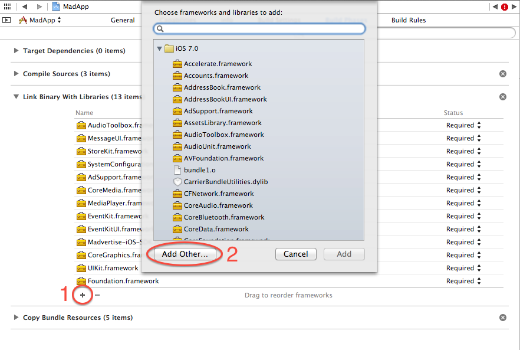

LiquidM iOS SDK Reference
This is the documentation for the LiquidM iOS SDK. It features integration instructions as well as a reference to all the classes that you’ll need to integrate the SDK in your app.
Integration Instructions
- unzip the framework
- place framework in your project directory
- link your app to the framework
- click the plus sign
- click add other and pick LiquidM-iOS-SDK.framework in your project folder

add the following standard frameworks to the linking process
- AudioToolbox
- MessageUI
- StoreKit
- SystemConfiguration
- AdSupport
- CoreMedia
- MediaPlayer
- EventKit
- EventKitUI
- libxml2.dylib
add the bundle inside the framework. This can be found on LiquidM-iOS-SDK.framework/Versions/A/Resources

- configure at least one of your LiquidM app tokens under the key “default” in a dictionary called “LiquidMAppIDs”
- configure as many additional app IDs under this dictionary
- add
-ObjCto the linker flags

Integration Examples
Banner
- (void)viewDidLoad
{
[super viewDidLoad];
NSDictionary *options = @{
LiquidMControllerOptionTokenTag: @"TAG_OF_TOKEN",
LiquidMControllerOptionReload: [NSNumber numberWithBool:NO]
};
lmAd = [LiquidMAdViewController controllerWithRootViewController:self
adClass:LiquidMAdClassMMA
options:options];
lmAd.delegate = self;
[self.view addSubview:lmAd.view];
[self.view bringSubviewToFront:lmAd.view];
}
Aditional parameters like tokenTag or reload should be declared inside a NSDictionary.
To present the banners and interstitials in the ViewController, you should call presentAd
- (void)controllerDidReceiveAd:(LiquidMAdViewController *)controller
{
[lmAd presentAd];
}
Interstitial
- (void)viewDidLoad
{
[super viewDidLoad];
NSDictionary *options = @{
LiquidMControllerOptionTokenTag: @"TAG_OF_TOKEN",
LiquidMControllerOptionReload: [NSNumber numberWithBool:NO]
};
lmAd = [LiquidMAdViewController controllerWithRootViewController:self
adClass:LiquidMAdClassRichMedia
options:options];
lmAd.delegate = self;
}
Position banner at custom location on your view
You can position the ad banner on your available view just by setting its frame.
- (void)viewDidLoad
{
[super viewDidLoad];
NSDictionary *options = @{
LiquidMControllerOptionReload: [NSNumber numberWithBool:YES]
};
lmAd = [[LiquidMAdViewController alloc] initWithRootViewController:self
adClass:LiquidMAdClassMMA
options:options];
CGRect frame = CGRectMake(0,
self.view.frame.size.height - lmAd.view.frame.size.height,
lmAd.view.frame.size.width,
lmAd.view.frame.size.height);
lmAd.view.frame = frame;
[self.view addSubview:lmAd.view];
[self.view bringSubviewToFront:lmAd.view];
}
Getting a banner using dimensions
You can obtain banners by making a request with their specific dimensions.
- (void)viewDidLoad
{
[super viewDidLoad];
lmAd = [LiquidMAdViewController controllerWithRootViewController:self
adSize:CGSizeMake(320,53)
options:nil];
lmAd.delegate = self;
[self.view addSubview:lmAd.view];
[self.view bringSubviewToFront:lmAd.view];
}
Video Ads
You can request video ads via LiquidMVideoViewController like in the following
example:
- (void)viewDidLoad
{
[super viewDidLoad];
NSMutableDictionary *options = [NSMutableDictionary dictionary];
[options setObject:@"<YOUR_TOKEN>"
forKey:LiquidMControllerOptionToken];
[options setObject:[NSNumber numberWithBool:YES]
forKey:LiquidMControllerOptionFullscreen];
videoController = [LiquidMVideoViewController controllerWithAdClass:LiquidMAdClassVideoPreRoll
videoURL:@"<YOUR_VIDEO_CONTENT_URL>"
options:options];
videoController.delegate = self;
videoController.view.frame = CGRectMake(0,
64,
[[UIScreen mainScreen] bounds].size.width,
180);
[self.view addSubview:videoController.view];
}
- (void)controllerDidReceiveAd:(LiquidMAdViewController *)controller
{
[videoController play];
}